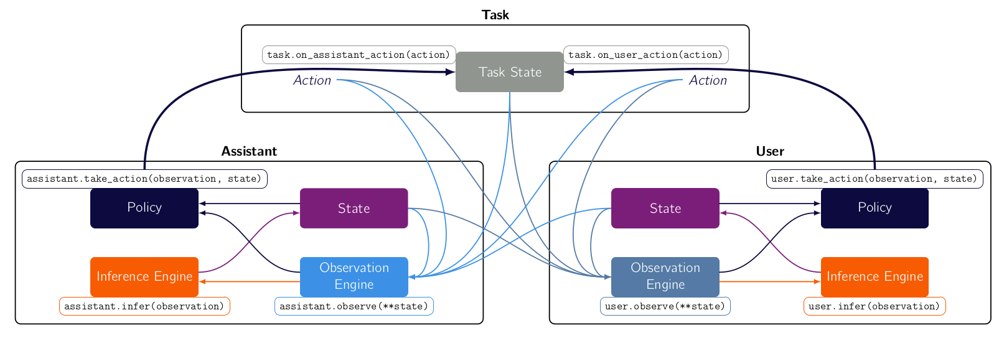
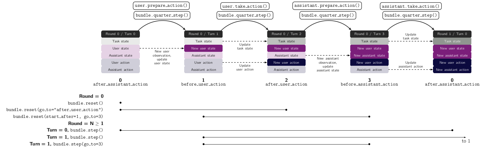

Bundles
Bundles are the objects that compose the three main components (task, user and assistant) into a game. It forms the joint state, collects the rewards and ensure synchronous sequential sequences of observations, inferences and actions of the two agents.
{kind=link}
They are useful because they allow you to orchestrate the interaction how you want it.
In most cases, there is no need to define a new Bundle, and you can straightaway use the standard existing Bundle. For example, you can create a bundle and interact with it like so:
1
2
3class ExampleTaskWithoutAssistant(ExampleTask):
4 def on_assistant_action(self, *args, **kwargs):
5 return self.state, 0, False
6
7
8example_task = ExampleTaskWithoutAssistant()
9example_user = ExampleUser()
10bundle = Bundle(task=example_task, user=example_user)
11bundle.reset(go_to = 1)
12
13while True:
14 state, rewards, is_done = bundle.step()
15 if is_done:
16 break
Overview of Bundle mechanisms
The main API methods are the same as gym’s, although their functionality is extended.
reset, which allows you to have control which components you reset and how you reset them.step, which allows you to specify how agents select their actions, and how many turns to play .render, which combines all rendering methods of the components.close, which closes the bundle properly.
The following graphic explicits how the most important options work
{kind=link}
Stepping through a Bundle
The bundle directs the order of operations. Two important concepts are turns and rounds:
- There are 4 turns (see interaction model):
user prepares action (by creating observations and updating its internal state)
user takes action
assistant prepares action
assistant takes action
A round is the sequence of these 4 turns.
There are several ways in which you can indicate how to move the bundle from a state in a given round and turn to another.
Moving rounds
step-by-step To move rounds, you can simply call
step(user_action= None, assistant_action = None, go_to=None). This will move the bundle from turn T and round R to turn T and round T+1, by having the 4 turns be executed. Ifuser_action=None, then the user action is sampled from its policy engine. Otherwise, the provided action is used. This allows you to test the effect of a different policy on the same agent straightforwardly. The same holds for the assistant. Ifgo_to = k, then the turns will be played until the turn k is reached without completing the full round.Episodic sampling You can sample complete episodes at once with bundles sample method e.g.
sample(n_turns = 10)will sample 10 complete episodes (i.e. reset the bundle, step through it until the task is done, and in total 10 times).
The equivalence between step by step interaction and episodic sampling is shown below.
# Interaction loop starts
bundle.reset()
bundle.render("plottext")
plt.tight_layout()
while True:
obs, rewards, is_done = bundle.step()
bundle.render("plottext")
if is_done:
bundle.close()
break
# Interaction loop ends
# Interaction loop is equivalent to this (without render)
data = bundle.sample(n_turns=1)
Moving turns
quarter steps. The simplest is the
quarter_stepmethod, which just wraps the step method so that it advances exactly one turn:
# e.g. in turn 0, round 3
bundle.quarter_step() # turn 1 round 3
bundle.quarter_step() # query action from user policy engine, turn 2, round3
bundle.quarter_step() # turn 3 round 3
bundle.quarter_step(assistant_action = 1) # turn 0 round 4, use action '1' instead of querying from assistant_policy_engine
## equivalent to
bundle.step(assistant_action = 1)
triggered from agent. Each quarter step can also be triggered directly from the agent (and not the bundle), in a flexible way, allowing various effects on the actual bundle.
agent.prepare_action(affect_bundle=True, game_state=None, agent_observation=None, increment_turn=True)will prepare the action, i.e. equivalent to moving from turn 0 to 1.if
increment_turn=True, the turn number of the bundle is incremented by 1if
game_stateandagent_observationare given, then these will be used to prepare the action, otherwise the agent will use values internal to the bundle.if
affect_bundle = False, then the produced observation and the new internal state are not propagated to the bundle. This allows you to query your agent even though it is inside a bundle, without affecting the bundle.By default,
agent.prepare_action()is equivalent to thequarter_stepbetween turns 0 and 1, and 2 and 3.
agent.take_action(agent_observation=None, agent_state=None, increment_turn=True, update_action_state=True)will query the agent’s policy engine.if
increment_turn=True, the turn number of the bundle is incremented by 1if
agent_stateandagent_observationare given, then these will be used to select the action, otherwise the agent will use values internal to the bundle.if
update_action_state = True, then the produced action is propagated to the bundle. This allows you to query your agent even though it is inside a bundle, without affecting the bundle.
being even more precise. You can also access the workings of each component at a more precise level.
## 0->1 equivalent to bundle.quarter_step() obs, reward = user.observe(affect_bundle=True) state, reward = user.infer(affect_bundle=True, increment_turn=True) ## 1->2 equivalent to bundle.quarter_step() action, reward = user.take_action( increment_turn=True, task_transition=True)
You will find this useful if you need to query an agent without affecting the bundle.